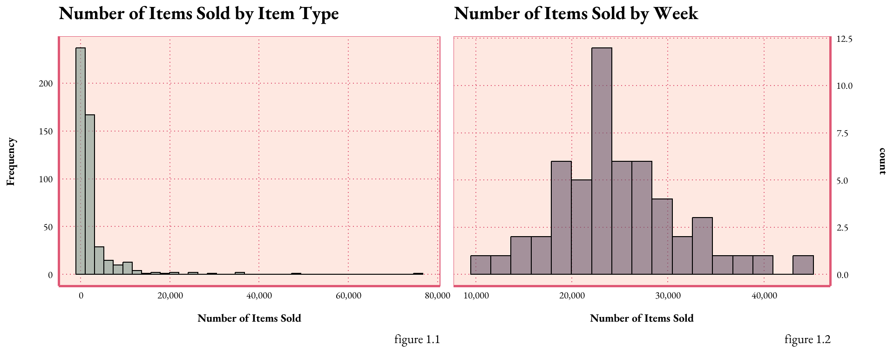
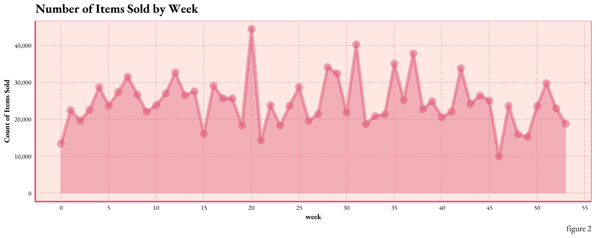
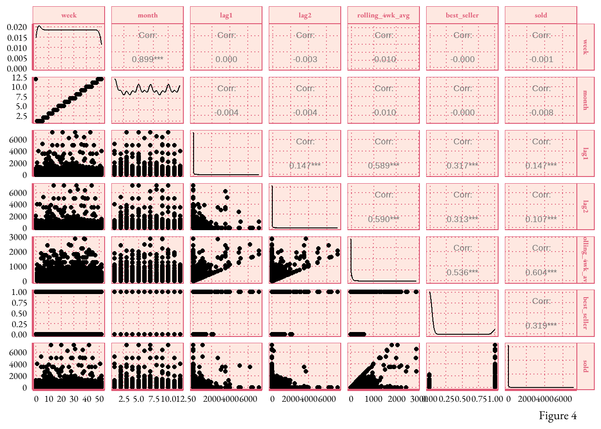

Throughout this project, I showcase the practical application of predictive analytics by utilizing statistical methods. I focus on unraveling temporal sales patterns to anticipate future consumer demand. Ultimately, this project demonstrates how analytics fuels the decision-making processes with forecasts and strategic insights.
While the primary aim of the project is demonstrating the foundations of statically modeling, it also serves as a platform for expanding other essential data science competencies. Leveraging R, I’ve not only engineered novel data sets, but also enhanced my knowledge in the areas of data wrangling and visualization design.
Overall, this project showcases more than current competencies; rather, it represents my potential for continuous growth and adaptability in the ever-evolving field of data science and machine learning. It marks the acquisition of new skills developed over the course of the semester, complementing years spent cultivating my craft of compelling data storytelling.
goal: forecast the inventory for the upcoming year
limitations: ideally, time series predictions benefit from multi-year trending data sets. However, the data for this project encompasses merely 54 weeks.
Additionally, my understanding of the data is constrained. For this project, I made certain assumptions about the timeframe and inventory type. In practical scenarios, thorough consultation and collaboration are essential components of any predictive analytics project.
this report contains:
Data Processing:
feature engineering
data splitting into training and testing sets
Model Development:
step-wise model selection methodology
Analytics and Evaluation:
exploratory and descriptive analytics
interpretation and evaluation of model outcomes
Initial Insights:
The provided inventory data set contains 488 items sold over the course of 54 weeks (0-53), with a total of ~ 1.3 million units sold.
Code
hist <- sai %>%group_by(item_no) %>%summarise(total_sold =sum(sold)) %>%ggplot(aes(x = total_sold)) +geom_histogram(binwidth =2100, color ="black", fill ="#7D998F", alpha = .6) +scale_x_continuous(labels = scales::comma_format()) +labs(x ="Number of Items Sold", y ="Frequency", title ="Number of Items Sold by Item Type", caption =" figure 1.1")+theme_art_nouveau()hist1 <- sai %>%group_by(week) %>%summarise(total_sold =sum(sold)) %>%ggplot(aes(x = total_sold)) +geom_histogram(binwidth =2100, color ="black", fill ="#DF5875", alpha = .6) +scale_x_continuous(labels = scales::comma_format()) +scale_y_continuous(position ="right") +labs(x ="Number of Items Sold", title ="Number of Items Sold by Week",caption =" figure 1.2")+theme_art_nouveau()# display the histograms side by sidegridExtra::grid.arrange(hist, hist1, ncol =2)

figure 1.The histograms demonstrate the distribution of the dataset by variable. The green histogram demonstrates the frequency of each item sold, with most items ranging between 500 and 1300 in total. The pink histogram conveys the temporal dispersion of weekly sales. Both graphs exhibit a right skew, particularly pronounced in the green histogram, implying a scarcity of high-sales items or weeks.
Code
line1 <- sai %>%group_by(week) %>%summarise(total_sold =sum(sold)) %>%ggplot(aes(x = week, y = total_sold)) +geom_line(size =2, alpha =0.5, color ="#DF5875") +geom_point(size =4, alpha =0.5, color ="#DF5875")+geom_area(fill ="#DF5875", alpha =0.4) +scale_x_continuous(breaks =seq(0, 55, by =5)) +scale_y_continuous(labels = scales::comma_format()) +labs(x ="week", y ="Count of Items Sold", title ="Number of Items Sold by Week",caption =" figure 2")+theme_art_nouveau()line1

figure 2.The line graph shows annual sales trends in the unprocessed data set. Weekly sales fluctuate within a range of 10,000 to 50,000 items, with the majority hovering between ~20k and ~30k units sold. A distinct sales peak is observed in week 20, while week 46 registers the slowest sales activity. This trend analysis aids in identifying key sales periods and provides valuable context for refining our predictive models
Feature engineering
I crafted new variables to derive a better understanding of sales trends, with the hope of enhancing the predictive model’s performanc. These variables provide valuable insights into sales trends, seasonality, and best-selling items, which can be used to enhance the predictive model’s performance and gain a better understanding of the data’s dynamics. Ideally, meeting with domain experts would be part of this process, to ensure the variables represent reality.
data dictionary
item_no: the unique identifier for each item
week: the week number. “sold”: number of items sold during a specific week
year_total:the total number of items sold for each item over the entire year
best_seller: A binary variable indicating whether the item is one of the top ten best-selling items based on volume
date: The specific date corresponding to a week
month: the month corresponding to a specific week
lag1: period for capturing seasonality or time-dependent patterns, item’s sold from the previous week
lag2: item’s sold from two-weeks prior
rolling_4wk_avg:rolling four-week average for each item, calculated as the total number of items sold over the past four weeks
Code
# total yearly sales for each iteminventory_sum <- sai %>%group_by(item_no) %>%summarise(year_total =sum(sold), .groups ="drop")sai <-left_join(sai, inventory_sum, by =c("item_no"))#### calculate the top 10% thresholdtop_10_threshold <-quantile(sai$year_total, 0.9)# dummy variable for bestsellers 1= yes 0 = nosai <- sai %>%mutate(best_seller =ifelse(year_total >= top_10_threshold, 1, 0))## figure out month an year for data, assuming the data is from 2022# week 0: December 27, 2021 - January 2, 2022# week 52: December 19, 2022 - December 25, 2022# week 53: December 26, 2022 - January 1, 2023sai$year <-2022sai <- sai %>%mutate(calendar_week =ifelse(week ==0, 52, ifelse(week ==53, 1, week)),calendar_year =ifelse(week ==0, year -1, ifelse(week ==53, year +1, year)))# Now use calendar_year and calendar_week in the MMWRweek2Date functionsai$date <-MMWRweek2Date(sai$calendar_year, sai$calendar_week)# find the year the week ends in, so we can figure out monthssai <- sai %>%mutate(wk_ending_year =ifelse(week %in%c(0, 53), year +1, year),week =ifelse(week ==53, 1, week))# create teh data and extract the month# wanted month to be quantitative to reduce model complexitysai$date <-MMWRweek2Date(sai$wk_ending_year, sai$calendar_week)sai$month <-month(sai$date, label =TRUE)sai$month <-month(sai$date)# create lag periods# https://www.youtube.com/watch?v=Kn3llTjYS5Esai <- sai %>%mutate(lag1 =lag(sold, 1),lag2 =lag(sold, 2))# https://www.rdocumentation.org/packages/zoo/versions/1.8-12/topics/rollmeansai <- sai %>%group_by(item_no) %>%mutate(rolling_4wk_avg = zoo::rollmean(sold, k =4, fill =NA, align ="right")) %>%ungroup()write.csv(sai, "FEinventory.csv")
Code
month_abbreviations <-c("Jan", "Feb", "Mar", "Apr", "May", "Jun", "Jul", "Aug", "Sep", "Oct", "Nov", "Dec")sai_average <- sai %>%filter(wk_ending_year ==2022) %>%group_by(month) %>%summarise(month_average =mean(sold))bar <- sai %>%filter(wk_ending_year ==2022) %>%mutate(month =factor(month, levels =1:12, labels = month_abbreviations)) %>%ggplot(aes(x = month, y = sold)) +geom_bar(stat ="sum", fill ="#68576D", alpha =0.75) +labs(x ="Month", y ="Total Sold", title ="Total Sold by Month",caption =" figure 4.1") +scale_y_continuous(labels = scales::comma_format()) +theme_art_nouveau() +theme(legend.position ="none")dot <- sai_average %>%mutate(month =factor(month, levels =1:12, labels = month_abbreviations)) %>%ggplot(aes(x = month, y = month_average)) +geom_point(size =3) +geom_point(size =4, shape =8, alpha =0.75) +geom_text(aes(label =round(month_average, 2)), nudge_y =1.5) +# Adjust nudge_y value for closer annotationsscale_y_continuous(position ="right") +labs(x ="Month", y ="", title ="Average Items Sold by Month", caption ="Figure 4.2") +theme_art_nouveau() +theme(axis.text.y =element_blank()) # Remove y-axis ticksgridExtra::grid.arrange(bar, dot, ncol =2)

figure 4.The bar graph displays the total sales volume by month. July stands out as the peak season, whereas November and December show lower inventory movement. U. However, the average number of items sold in a month is relatively low compared to the totals. This suggests the presence of numerous zeros, which are affecting the overall average.
Code
#https://www.geeksforgeeks.org/visualization-of-a-correlation-matrix-using-ggplot2-in-r/# Check the data types of variables in 'sai'
figure 5.The bar graph displays the total sales volume by month. July stands out as the peak season, whereas November and December show lower inventory movement. U. However, the average number of items sold in a month is relatively low compared to the totals. This suggests the presence of numerous zeros, which are affecting the overall average.
splitting the data
Now on the thrilling part! dividing up the data so we can train and test a predictive model using statisical methods.
I chose to split up the data by inventory type to avoid messing up the temporal order. Ideally I’d prefer to train on 2021 data and test on 2022 then make predictions for 2023
Code
# create a list of all items to randomly selectset.seed(1985)items_sample_list <-unique(sai$item_no) %>%sample(366)# 75% of the data# splitting the inventory by item type to keep the temporal orderis_train <- sai %>%filter(item_no %in% items_sample_list) %>% dplyr::select( item_no, week, month, lag1, lag2, rolling_4wk_avg, best_seller, sold) #not sure why i had to include the dplyr packageis_test<- sai %>%filter(!(item_no %in% items_sample_list)) %>% dplyr::select( item_no, week, month, lag1, lag2, rolling_4wk_avg, best_seller, sold) #not sure why i had to include the dplyr package
create a model based on the best selling item, inventory with more items sold are more predictable.
Model Feature Selection
find the best model using stepwise selection find the 2 best methods for every size predictors reasons to use stepwise with caution
irrelevant variables leads to unnecessary complexity in the resulting mode
define generalized linear regression and why I chose this for the model
subselection
This approach involves identifying a subset of the p predictors that we believe to be related to the response. We then fit a model using least squares on the reduced set of variables
assumptions of a generalized linear model y is continous
Code
# https://youtu.be/IScjygOnO0w# forward Stepwise Selection# nvmax = 8 specifies the maximum number of predictors to incorporate in the model.is_mod <-regsubsets(sold ~ week + month + lag1 + lag2 + rolling_4wk_avg + best_seller,data = is_test, nbest =2, method ="exhaustive")is_mod_summary_mx <-with(summary(is_mod), data.frame(rsq,adjr2, cp, rss, outmat))is_mod_summary_mx$predictors <-c(1,1,2,2,3,3,4,4,5,5,6) # for graphingis_mod_summary_mx$model <-c('a','b','a','b','a','b','a','b','a', 'b', 'a') # for graphing
for model six show the table of coefficient, std. error, t-statistic, p-value
Warning: Some values were outside the color scale and will be treated as NA
model comparison
rsq
adjr2
cp
rss
week
month
lag1
lag2
rolling_4wk_avg
best_seller
model
1
0.35517493
0.35507126
3641.238692
347410480
*
a
1
0.07253195
0.07238283
7962.790093
499689200
*
b
2
0.47178311
0.47161324
1860.324363
284585840
*
*
a
2
0.40971495
0.40952512
2809.333361
318026117
*
*
b
3
0.59311658
0.59292027
7.161336
219215369
*
*
*
a
3
0.47179023
0.47153538
1862.215571
284582007
*
*
*
b
4
0.59312292
0.59286113
9.064396
219211953
*
*
*
*
a
4
0.59311764
0.59285586
9.145038
219214795
*
*
*
*
b
5
0.59351846
0.59319149
5.016718
218998851
*
*
*
*
*
a
5
0.59312400
0.59279672
11.047895
219211372
*
*
*
*
*
b
6
0.59351955
0.59312713
7.000000
218998262
*
*
*
*
*
*
a
Code
# update this too look more like my other graphs#https://posit.co/blog/great-looking-tables-gt-0-2/# turn results into a pretty table# is_mod_summary_mx
model evaluation
Code
# make tghis chart prettiergcolors <-c("#68576D", "#DF5875")is_mod_summary_mx %>%pivot_longer(c(adjr2, cp), names_to ="metric", values_to ="value") %>%ggplot(aes(x = predictors, y = value, color = model)) +geom_line(show.legend =FALSE) +geom_point(size =3, alpha = .8) +facet_wrap(~metric, scales ="free") +scale_x_continuous(breaks =1:6) +scale_color_manual(values = gcolors) +labs(x ="predictors", y ="metric", title ="Number of Predictors by ADJR2 and CP",caption =" figure e") +theme_art_nouveau()
Code
# how can i make the value label larger on this?
I see that the more predictors the great the adjr2 and the lower the cp, which is be expected. there appears to be diminishing returns at 4 predictors.
model a has more optimal score on this compared to model b
why too many predictors are bad reason xyz
[interpret the graph]
explain why this is the best one what do each of these things tell me? - rsq -> highest r squared, explains the variability in the model - adjr2 - > highest - cp -> smallest - rss -> smallest
I want to take my models through one more level os scrunity. having trouble choosing, i spent a lot of time making my variables so lets look at AIC several models what is AIC? Lower AIC values indicate a better-fit model, and a model with a delta-AIC (the difference between the two AIC values being compared) of more than -2 is considered significantly better than the model it is being compared to
find the coefficients and (Akaike Information Criterion) AIC Multiple linear regression compare the three best models